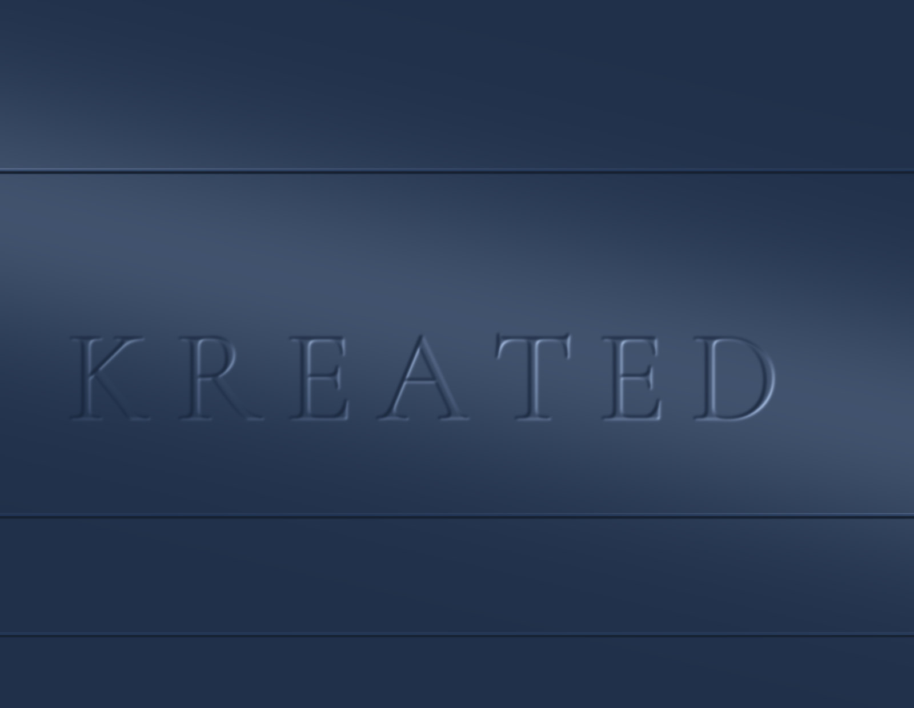

COPY CANDIDATE — NOT APPROVED
Make your business
the obvious choice.
Web design, branding, and local SEO for owner-operated companies.

STEP 5B PROTOTYPE — NOT PRODUCTION · isolated intro/hero test · not the homepage
COPY CANDIDATE — NOT APPROVED
Web design, branding, and local SEO for owner-operated companies.
